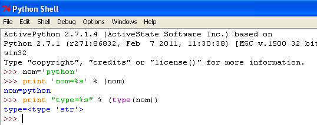
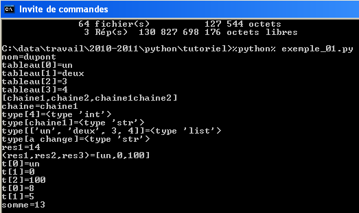
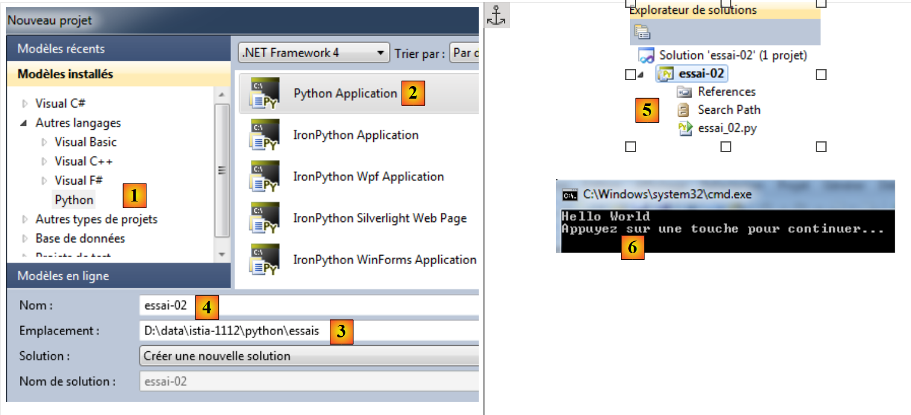

2. تثبيت مترجم لغة Python
2.1. ActivePython
تم اختبار الأمثلة الواردة في هذا المستند باستخدام مترجم لغة Python الخاص بـ ActiveState:
 |
ملاحظات:
- لا تقم بتنزيل الإصدار 64 بت من Active Python. فهو لا يسمح بتثبيت الوحدة النمطية MySQLdb التي سنحتاجها لاحقًا في هذا المستند.
يؤدي تثبيت ActivePython إلى إنشاء الشجرة التالية:
 |
والقائمة التالية في شجرة التطبيقات:
 |
- 1: وثائق ActivePython. هذه الوثائق غنية جدًّا، ومن الأفضل الرجوع إليها فور مواجهة أي مشكلة؛
- 2: مترجم Python تفاعلي؛
- 3: مدير حزم Active Python. سنستخدمه لتثبيت حزمة Python التي تتيح العمل مع قواعد البيانات MySQL.
لن نستخدم مترجم Python التفاعلي. يكفي أن نعلم أن البرامج النصية الواردة في هذا المستند يمكن تنفيذها باستخدام هذا المترجم. وهو مفيد لاختبار عمل إحدى وظائف Python، لكنه غير مناسب للبرامج النصية التي يتعين إعادة استخدامها. وإليك مثالاً على ذلك:
 |
تسمح علامة الأوامر >>> بإدخال أمر Python يتم تنفيذه على الفور. الكود المكتوب أعلاه له المعنى التالي:
السطور:
- 1: تهيئة متغير. في لغة Python، لا يتم تحديد نوع المتغيرات. فهي تأخذ تلقائيًا نوع القيمة التي تُعزى إليها. وقد يتغير هذا النوع بمرور الوقت؛
- 2: عرض الاسم. «nom=%s» هو تنسيق عرض حيث يمثل %s معلمة شكلية تشير إلى سلسلة أحرف. (nom) هي المعلمة الفعلية التي سيتم عرضها بدلاً من %s؛
- 3: نتيجة العرض؛
- 4: عرض نوع المتغير «name»؛
- 5: المتغير «name» من النوع str (سلسلة أحرف).
فيما يلي، نقدم نصوصًا برمجية تم اختبارها بالطريقة التالية:
- يمكن كتابة البرنامج النصي باستخدام أي محرر نصوص. هنا استخدمنا Notepad++ الذي يوفر تمييزًا لونيًا لتركيب البرامج النصية بلغة Python؛
- يتم تنفيذ البرنامج النصي في نافذة DOS.
 |
- سننتقل إلى المجلد الذي يحتوي على البرنامج النصي المراد اختباره؛
- المتغير %python% هو متغير نظامي:
- السطر 1: عرض قيمة متغير البيئة %python%؛
- السطر 2: قيمتها: <installdir>\python.exe حيث installdir هو مجلد تثبيت ActivePython.
2.2. أدوات Python لـ Visual Studio
يتوفر [Python Tools for Visual Studio] (فبراير 2012) في الإصدار التالي: URL. ويضيف تشغيله ميزات Python إلى Visual Studio 2010. الإصدار Express من Visual Studio 2010 مجاني ومتاح في URL و[http://www.microsoft.com/visualstudio/en-us/products/2010-editions/express].
بمجرد تثبيت الإضافات [Python Tools for Visual Studio]، يمكن عندئذٍ إنشاء مشاريع Python باستخدام VS 2010:
 |
- بالنسبة لجميع الأمثلة الواردة في هذا المستند، يُعد الخيار [1] مناسبًا؛
- [2]: تتيح القائمة (أدوات / خيارات) تكوين بيئة Python.
يجب أن يكون Visual Studio قد اكتشف مترجم ActivePython :
 |
- في [4]، نطلب أن ينتهي تشغيل البرنامج بفترة توقف يقوم المستخدم بإنهائها بالضغط على مفتاح في لوحة المفاتيح.
لنقم بإنشاء مشروع Python (ملف / جديد / مشروع):
 |
- في [1,2]: اختر مشروع Python من النوع [Python Application]؛
- في [3]: اختر مجلدًا للمشروع؛
- في [4]: قم بتسمية المشروع؛
- في [5]: المشروع الذي تم إنشاؤه.
الملف [essai_02.py] هو برنامج بيثون:
print('Hello World')
يتم تشغيله بواسطة [Ctrl-F5]: تظهر النتيجة في نافذة DOS [6]. تم اختبار جميع أكواد المستند بهذه الطريقة أيضًا. يتم تقديم الأمثلة في شكل حل VS 2010:
 |